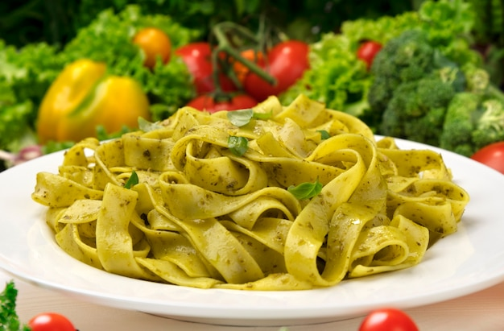

Odin Recipies: Home
Lasanha vegetariana

Ingredientes
- Alho a gosto
- 1/2 Cebola
- 1/2 cenoura
- 4 tomares bem maduros
- 200g Poupa de tomate
- Páprica picante e defumada a gosto
- Fumaça em pó a gosto
- Salsinha e cebolinha a gosto
- Manjericão
- Macarrão fettuccine
Modo de preparo:
- Acrescente os 4 tomates cortados ao meio, retire a pele e sementes se preferir, e coleque meio copo de água
- Em uma vasilha misture a poupa de tomate, 400ml água, os temperos, o shoyu e o melado caso queira o molho mais adocicado
- Quando os tomates estiverem bem macios acrescente a mistura do molho e deixe cozinhar em fogo baixo
- Aqueça a água salgada até ferver
- Coloque o macarrão e deixe cozinhar por 7 minutos
- Misture o macarrão com o molho e PRONTO!!!